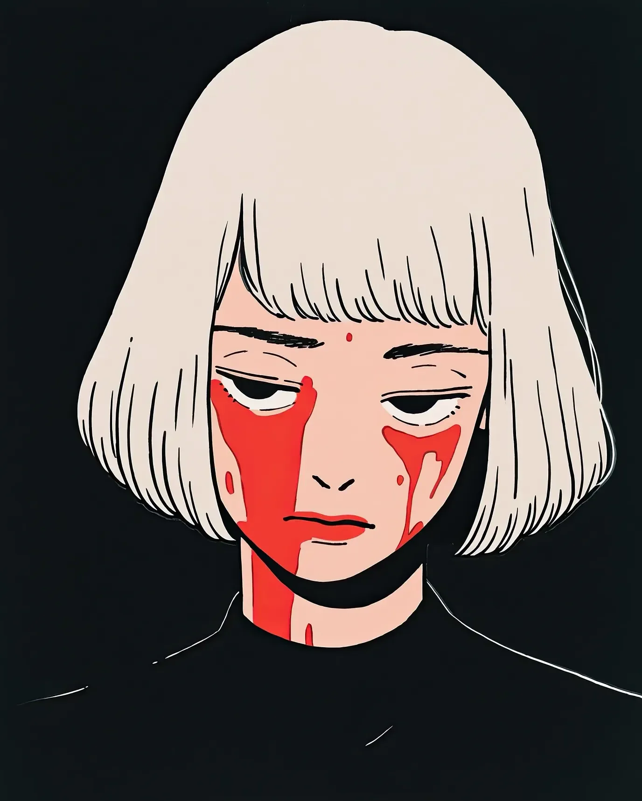

그의 마지막 말은 목구멍에 꽂힌 칼을 지나 꾸르륵 흘러나왔다: “하지만 당신은 너무 순진해 보이는데.” 그녀의 무표정한 얼굴은 전혀 변하지 않았다.
[His last words gurgled past the knife in his windpipe: “But you look so innocent.” Her blank expression never changed.]
그녀는 세라믹 칼날을 수학적 정확도로 비틀었다 - 시계 방향으로 45도, 마치 이를 닦는 것처럼 익숙한 동작이었다. 동맥에서 분출된 피가 그녀의 창백한 얼굴에 비대칭적인 무늬를 그렸고, 따뜻한 핏방울이 기괴한 눈물처럼 그녀의 뺨을 타고 흘러내렸다. 그녀의 맞춤 제작 칼 - 다마스커스 강철 코어, 세라믹 코팅 - 은 고급 와인 코르크를 빼는 것처럼 젖은 소리를 내며 빠져나왔다.
[She twisted the ceramic blade with mathematical precision - forty-five degrees clockwise, a movement as practiced as brushing her teeth. The arterial spray painted her pale face in asymmetrical patterns, warm droplets sliding down her cheeks like macabre tears. Her custom blade - Damascus steel core, ceramic coating - made a wet sound as it withdrew, like uncorking fine wine.]
목표물의 파텍 필립 시계는 그의 몸이 힘을 잃기 전까지 7번 더 째깍거렸다. 칼날은 그녀가 직접 설계한 맞춤형 장치를 통해 그녀의 소매 속으로 사라졌다. 그의 피는 오부송 카펫에 스며들었다 - 18세기 제품으로, 대부분의 자동차보다 더 비싼 것이었다. 이런 장인 정신의 낭비. 하지만 또한, 한때 사람이었던 식어가는 고기도 마찬가지였다.
[The target’s Patek Philippe ticked seven more times before his body went slack. The blade disappeared into her sleeve, a custom mechanism of her own design. His blood soaked into the Aubusson carpet - eighteenth century, worth more than most cars. Such a waste of craftsmanship. But then again, so was the cooling meat that had once been a man.]
사람들은 암살자가 흉터와 수염이 있는 거대한 남자일 거라고 예상한다. 완벽한 단발머리와 빈티지 디올에 대한 취향을 가진 섬세한 여자가 아니라. 그들의 마지막 표정은 항상 같은 불신을 담고 있었다 - 마치 죽음이 6사이즈 신발과 샤넬 No. 5를 착용할 리 없다는 듯이.
[People expected assassins to be hulking men with scars and stubble. Not a delicate woman with a perfect bob cut and a penchant for vintage Dior. Their last expressions always carried the same disbelief - as if death couldn’t possibly wear size six shoes and Chanel No. 5.]
그녀의 전화기가 짹짹 울렸다: 네 명의 이름이 더 있었다. 다음 타겟은 오페라에 숨어 자신이 영리하다고 생각했다. 그녀는 마담 버터플라이 3막에서 그를 찾을 것이다, 소프라노의 가장 높은 음이 그의 경추가 분리되는 소리를 가릴 때.
[Her phone chirped: four more names. The next thought himself clever, hiding at the opera. She would find him during Madama Butterfly’s third act, when the soprano’s highest note would mask the sound of his cervical vertebrae separating.]
오페라 하우스는 도쿄의 네온 스카이라인을 배경으로 금박을 입힌 묘지처럼 우뚝 솟아 있었다. 그녀는 이브닝 글러브를 조정했다 - 검은 실크, 팔꿈치 길이, 교살용 와이어의 티타늄 손잡이를 숨기기에 완벽했다. 와이어 자체는 피아노 줄로, 미세한 톱니 모양으로 특수 제작되어 연골을 따뜻한 버터처럼 자를 수 있을 만큼 얇았다.
[The opera house loomed like a gilded mausoleum against Tokyo’s neon skyline. She adjusted her evening gloves - black silk, elbow-length, perfect for concealing the garrote’s titanium handles. The wire itself was piano string, custom-modified with microscopic serrations, thin enough to slice through cartilage like warm butter.]
그녀의 타겟은 5번 박스석에 앉아 있었고, 평소처럼 근육질의 수행원들에 둘러싸여 있었다. 그녀는 그들의 보안 점검 사이의 박자를 세었다 - 하나-둘-셋-넷 - 그들의 작은 두뇌만큼이나 기계적이었다. 첫 번째 경비원의 목은 젖은 속삭임과 함께 갈라졌다. 그녀는 그가 떨어지기 전에 그를 붙잡아 벨벳 커튼 뒤에 부드럽게 눕혔다. 피는 붉은 벨벳 위로 어두운 장미처럼 피어났다.
[Her target sat in Box Five, surrounded by his usual entourage of muscle. She counted the beats between their security sweeps - one-two-three-four - as mechanical as their tiny minds. The first guard’s neck split open with a wet whisper. She caught him before he could fall, laying him gently behind the velvet curtain. The blood bloomed across the red velvet like dark roses.]
두 번째 경비원은 총을 꺼내려다 죽었다. 피아노 줄이 그의 목구멍을 척추까지 열어젖혔고, 그의 비명 시도는 부드러운 쌕쌕거림으로 변했다. 피가 나비부인의 아리아에 완벽하게 맞춰 분수처럼 뿜어져 나와 벽지에 추상적인 무늬를 그렸다. 그녀는 옆으로 비켜서서 동맥에서 뿜어져 나오는 피가 그녀의 지방시 드레스에 묻지 않게 했다. 크림색 벽지 위의 진홍색 호 - 그것은 혼돈의 아름다움 속에서 거의 잭슨 폴록 같았다.
[The second one died reaching for his gun. The piano wire opened his throat to his spine, his attempt at a scream becoming a soft wheeze. Blood fountained in perfect time with Butterfly’s aria, painting abstract patterns on the wallpaper. She stepped aside, letting the arterial spray miss her Givenchy dress. The crimson arc against cream wallpaper - it was almost Jackson Pollock in its chaotic beauty.]
세 번째와 네 번째는 함께 죽었다 - 한 명은 그녀의 발뒤꿈치(지미 추, 이번 시즌 컬렉션)에 의해 기도가 으스러졌고, 다른 한 명은 그녀가 진주 손잡이 모자핀을 그의 귓구멍으로 찔러 넣자 눈이 공허해졌다. 뇌간은 정확한 터치에 굴복하는 과숙한 과일처럼 너무나 섬세한 것이었다.
[Three and Four died together - one’s windpipe crushed by her heel (Jimmy Choo, this season’s collection), the other’s eyes going blank as she drove a pearl-handled hatpin through his ear canal. The brain stem was such a delicate thing, like overripe fruit yielding to a precise touch.]
그녀가 그의 개인 박스석으로 미끄러져 들어갔을 때 그녀의 타겟은 마침내 뭔가 잘못되었다는 것을 알아차렸다. 크리드 아벤투스, 터무니없이 비싼 그의 향수는 그의 공포의 쓴 악취를 가릴 수 없었다. “누구-"라고 그가 말하려 했을 때 그녀는 그의 명치에 무릎을 꽂았다.
[Her target finally noticed something was wrong when she slipped into his private box. His cologne - Creed Aventus, obscenely expensive - couldn’t mask the acrid stench of his fear. "Who-” he managed before she drove her knee into his solar plexus.]
“쉿,” 그녀는 와이어를 그의 목에 대고 속삭였다. “가장 좋은 부분을 놓치게 될 거예요.” 소프라노가 크레셴도에 도달했을 때 그녀는 와이어를 당겼다. 와이어는 피부를 통과하고, 근육을 통과하고, 그를 인간으로 만드는 모든 것을 통과하며 깊게 파고들었다. 그의 손은 자신의 목을 할퀴었고, 손톱은 필사적으로 자신의 살을 찢어냈다.
[“Shhhh,” she whispered, pressing the wire against his throat. “You’ll miss the best part.” The soprano hit her crescendo as she pulled. The wire cut deep, through skin, through muscle, through everything that made him human. His hands clawed at his neck, fingernails tearing his own flesh in desperate strips.]
그녀는 연인처럼 그를 가까이 붙들고, 그가 비명을 지르려고 할 때 눈이 튀어나오는 것을 지켜보았다. 그의 몸은 경련을 일으켰다 - 한 번, 두 번 - 그리고 힘이 빠졌다. 아래에서는 관객들이 소프라노의 공연에 박수를 보내고 있었고, 위에서 벌어지는 개인 쇼에 대해서는 전혀 알지 못했다.
[She held him close, like a lover, watching his eyes bulge as he tried to scream. His body convulsed - once, twice - then went limp. Below, the audience applauded the soprano’s performance, unaware of the private show above.]
그녀는 그를 자리에 앉혀 놓았다. 머리는 간신히 붙어 있고, 무대를 향해 있었다. 그들이 그를 그런 모습으로 발견하게 하라 - 오페라에 머리가 돌아버린 또 다른 평론가로. 구성은 완벽했다: 그의 축 처진 몸의 각도, 그의 피가 우아한 시내처럼 좌석을 따라 흘러내리는 방식, 그의 얼굴에 얼어붙은 최후의 놀라움. 죽음은 항상 사진에 잘 나와야 한다.
[She arranged him in his seat, head barely attached, facing the stage. Let them find him like that - another critic who lost his head over the opera. The composition was perfect: the angle of his slumped body, the way his blood trickled down the seat in elegant rivulets, the look of final surprise frozen on his face. Death should always be photogenic.]
그녀의 전화가 진동했다. 새로운 타겟. 자신의 펜트하우스 스위트에서 건드릴 수 없다고 자부하는 야쿠자 부관. 그녀는 시계를 확인했다 - 더 실용적인 옷으로 갈아입을 시간이 충분했다. 케블라 안감이 있는 캣수트가 적당할 것이다 - 물론 검은색으로. 죽음은 항상 우아해야 한다.
[Her phone buzzed. New target. A yakuza lieutenant who fancied himself untouchable in his penthouse suite. She checked her watch - plenty of time to change into something more practical. The Kevlar-lined catsuit would do - black, of course. Death should always be elegant.]
펜트하우스의 보안 시스템은 스위스제였다 - 정확하고, 비싸고, 완전히 예측 가능했다. 대리석 바닥에 발소리를 울리며 정확히 15초 간격으로 순찰하는 경비원들처럼. 그녀는 연기처럼 그들의 패턴 사이로 미끄러져 들어갔고, 그녀의 캣수트는 그림자 속으로 녹아들었다.
[The penthouse’s security system was Swiss - precise, expensive, utterly predictable. Like the guards who patrolled in perfect fifteen-second intervals, their footsteps echoing off marble floors. She slipped between their patterns like smoke, her catsuit melting into shadows.]
첫 번째 경비원은 조용히 죽었다. 탄소 섬유 바늘이 두개골과 척추가 만나는 부드러운 지점을 찾아냈다. 두 번째 경비원은 3초 후에 뒤따랐다. 그의 목은 너무 날카로운 칼날에 의해 열렸고, 그는 자신의 피가 바닥에서 이미 식어가고 있을 때까지 그것을 느끼지 못했다. 그녀가 그들의 시체를 비품 창고에 배치했을 때 만족스러운 둔탁한 소리가 났다 - 풀 먹인 제복과 전술 장비를 입은 죽음의 장면.
[The first guard died silently, a carbon fiber needle finding the soft spot where skull met spine. The second followed three seconds later, his throat opened by a blade so sharp he didn’t feel it until his blood was already cooling on the floor. Their bodies made satisfying thuds as she arranged them in the supply closet - a tableau of death in starched uniforms and tactical gear.]
엘리베이터는 스캔이 필요했다. 그녀는 두 번째 경비원의 엄지손가락을 사용했다 - 아직 따뜻하고, 아직 유용했다. 생체 인식 스캐너가 녹색으로 깜박였다. 42층 위에서 그녀의 타겟이 기다리고 있었다, 숫자가 안전을 의미한다고 생각하는 사람들에 둘러싸여. 그들은 죽음이 확률을 신경 쓰지 않는다는 것을 결코 배우지 못했다.
[The elevator required a scan. She used the second guard’s thumb - still warm, still useful. The biometric scanner pulsed green. Forty-two floors up, her target waited, surrounded by men who thought numbers meant safety. They never learned that death didn’t care about odds.]
문이 열리자 근육의 벽이 나타났다 - 여섯 명의 남자, 모두 무장했다. 그들이 방아쇠를 당기기도 전에 그녀는 움직였다, 부러지는 뼈와 끊어진 동맥의 소리에 맞춰 안무된 죽음의 춤이었다. 첫 두 명은 던진 칼날에 죽었다 - 목과 눈, 그들의 몸은 완벽한 동시성으로 쓰러졌다. 세 번째는 발사할 수 있었지만, 총알이 그녀의 귀를 스치며 지나갈 때 그녀는 그의 명치에 무릎을 꽂았다. 그의 갈비뼈는 마른 나뭇가지처럼 부서졌다.
[The doors opened to a wall of muscle - six men, all armed. She moved before they could squeeze triggers, a dance of death choreographed to the sound of breaking bones and severed arteries. The first two died from thrown blades - throat and eye, their bodies falling in perfect synchronization. The third managed to fire, the bullet whining past her ear as she drove her knee into his solar plexus. His ribs splintered like dry twigs.]
네 번째와 다섯 번째는 함께 죽었다, 그들의 머리가 서로 부딪히며 익은 멜론이 터지는 것 같은 소리를 냈다. 마지막 한 명은 실제로 비명을 질렀다 - 초보자의 실수였다. 그녀는 모노필라멘트 와이어로 그를 침묵시켰고, 그의 머리는 외과적 정밀함으로 어깨에서 분리되었다. 그것은 대리석 바닥을 가로질러 굴러갔고, 예술가의 붓 자국처럼 진홍색 자국을 남겼다.
[Four and Five died together, their heads cracking against each other with a sound like overripe melons splitting. The last one actually screamed - a rookie mistake. She silenced him with mono-filament wire, his head separating from his shoulders with surgical precision. It rolled across the marble floor, leaving a crimson trail like an artist’s brush stroke.]
피가 그녀의 발 주위에 고였고, 비싼 카펫에 스며들었다. 이런 낭비. 하지만 또한, 야쿠자는 인테리어 디자인에 대한 취향으로 알려진 적이 없었다.
[Blood pooled around her feet, soaking into the expensive carpet. Such a waste. But then again, yakuza were never known for their taste in interior design.]
펜트하우스 스위트는 백단향과 공포의 냄새가 났다. 그녀의 타겟은 마호가니 책상 뒤에 앉아, 떨리는 손으로 침착함을 보여주려고 노력했다. 두 명의 경비원이 그의 양쪽에 서 있었다 - 마지막 방어선. 아마추어 시간이었다.
[The penthouse suite smelled of sandalwood and fear. Her target sat behind his mahogany desk, trying to project calm with trembling hands. Two more guards flanked him - the last line of defense. Amateur hour.]
“당신은 내가 예상했던 것보다 작군요,” 그가 일본어로 말했다, 이마에 맺힌 땀에도 불구하고 그의 목소리는 안정적이었다. 그녀의 반쯤 감긴 눈은 벽의 얼룩을 바라보는 것과 같은 관심으로 그를 바라보았다.
[“You’re smaller than I expected,” he said in Japanese, his voice steady despite the sweat beading on his forehead. Her half-lidded eyes regarded him with the same interest one might give to a stain on the wall.]
경비원들이 움직였다. 그녀는 더 빨랐다. 티타늄 와이어가 공기를 가르며 노래하듯 첫 번째 경비원의 목 높이에 걸렸다. 그의 머리는 완벽한 궤적을 따라 분리되었고, 피는 수입된 벽지 위로 완벽한 호를 그리며 튀었다. 두 번째 경비원의 손이 무기를 향해 반쯤 움직였을 때 그녀는 그의 무릎에 발뒤꿈치를 꽂았다. 관절이 안쪽으로 터져 나갔다. 그녀가 와이어를 그의 목에 감고 당기자 그의 비명은 짧게 끊겼다 - 깔끔한 참수, 머리는 기괴한 볼링공처럼 굴러갔다.
[The guards moved. She was faster. The titanium wire sang through the air, catching the first guard at throat level. His head severed along a flawless trajectory, blood painting perfect arcs across the imported wallpaper. The second guard’s hand was halfway to his weapon when she drove her heel into his knee. The joint exploded inward. His scream cut short as she wrapped the wire around his neck and pulled - a clean decapitation, the head tumbling like a macabre bowling ball.]
“잠깐!” 야쿠자 보스는 뒤로 허둥지둥 물러났고, 의자를 넘어뜨렸다. “두 배로 지불할 수 있어. 세 배로!”
[“Wait!” The yakuza boss scrambled backward, knocking over his chair. “I can pay double. Triple!”]
그녀는 측정된 걸음으로 다가갔고, 그녀의 와이어에서는 일정한 메트로놈 박자로 피가 떨어졌다. 그의 등은 바닥에서 천장까지 이어진 창문에 부딪혔다. 42층의 빈 공기가 그의 뒤에서 기다리고 있었다.
[She approached with measured steps, blood dripping from her wire in steady metronome beats. His back hit the floor-to-ceiling window. Forty-two stories of empty air waited behind him.]
“제발…” 그가 속삭였다.
[“Please…” he whispered.]
그녀의 와이어가 그의 목을 찾았다. 하지만 이번에는 그녀가 천천히 진행했다. 그것이 피부, 근육, 연골을 관통할 때 모든 미세한 톱니를 느끼게 했다. 그의 눈은 튀어나왔고, 손은 허공을 할퀴었다. 와이어는 더 깊게, 더 깊게 파고들었고, 마침내 뼈에 닿았다. 마지막 비틀기와 함께, 그의 머리는 분리되었고, 얼굴은 공포의 가면으로 얼어붙었다.
[Her wire found his throat. But this time, she went slowly. Let him feel every microscopic serration as it bit through skin, muscle, cartilage. His eyes bulged, hands clawing at nothing. The wire cut deeper, deeper, until it hit bone. With a final twist, his head came free, face frozen in a mask of terror.]
그녀는 그의 시체를 가죽 의자에 조심스럽게 배치했고, 머리는 정확히 그의 무릎에 놓았으며, 눈은 허공을 응시하고 있었다. 피는 계속해서 그의 목에서 점점 약해지는 분출로 펌프되었고, 각각은 마지막보다 약했으며, 마치 마르는 분수처럼 보였다. 진홍색 줄기는 그의 흰 셔츠에 폴록이 질투할 만한 추상적인 패턴을 그렸다.
[She arranged his body carefully in his leather chair, head placed precisely in his lap, eyes staring up at nothing. Blood continued to pump from his neck in diminishing spurts, each one weaker than the last, like a fountain running dry. The crimson streams painted his white shirt in abstract patterns that would have made Pollock jealous.]
그녀의 전화가 다시 진동했다. 마지막 타겟 - 자신의 법정이 요새라고 생각하는 부패한 판사. 그녀는 창문에 비친 자신의 모습을 확인하며, 완벽한 단발머리에서 피 얼룩을 닦아냈다. 그녀를 응시하는 죽은 눈에는 아무것도 보이지 않았다 - 쾌락도, 혐오감도 없이, 그저 전문적인 초연함의 빈 웅덩이뿐이었다.
[Her phone buzzed again. The final target - a corrupt judge who thought his chamber was a fortress. She checked her reflection in the window, wiping a spot of blood from her perfect bob cut. The dead eyes that stared back showed nothing - no pleasure, no disgust, just empty pools of professional detachment.]
법원의 대리석 홀은 그녀의 측정된 발자국 소리로 울려 퍼졌다. 이제 피가 깨끗이 닦인 그녀의 얼굴은 닦아진 돌에 유령의 초상화처럼 반사되었다. 완벽한 단발머리는 무수한 죽음을 같은 초연한 관심으로 목격한 그 반쯤 감긴 눈을 감싸고 있었다.
[The courthouse’s marble halls echoed with her measured footsteps. Her face, now clean of blood, reflected in the polished stone like a ghost’s portrait. The perfect bob cut framed those half-lidded eyes that had witnessed countless deaths with the same detached interest.]
판사의 개인 집무실 문은 오크나무로 만들어졌다 - 19세기, 수작업으로 조각된. 그런 장인 정신은 존중받을 만했다. 그녀는 문을 발로 차는 대신 자물쇠를 따냈다. 판사는 책상에서 고개를 들었고, 턱살이 떨리며, 그녀의 실루엣을 보고 눈이 커졌다.
[The judge’s private chamber door was oak - nineteenth century, hand-carved. Such craftsmanship deserved respect. She picked the lock instead of kicking it in. The judge looked up from his desk, jowls quivering, eyes widening at her silhouette.]
“이제 재판을 시작합니다,” 그녀가 말했다, 그녀의 목소리는 겨울 공기처럼 공허했다. 그의 보안 비상 버튼은 쓸모없이 딸깍거렸다 - 그녀는 몇 시간 전에 이미 그것을 무력화시켰다. 티타늄 와이어가 마지막으로 그녀의 소매에서 미끄러져 나왔다.
[“Court is now in session,” she said, her voice as empty as winter air. His security panic button clicked uselessly - she’d disabled it hours ago. The titanium wire slipped from her sleeve one last time.]
“당신에 대한 증거는 설득력이 있습니다.” 그녀는 물처럼 움직였고, 그가 책상 서랍을 필사적으로 잡으려는 시도를 피해 흘러갔다. “다수의 부패 혐의. 뇌물 수수.” 와이어가 빛을 받아 반짝였다. “무고한 사람들을 사형 선고하는 것.”
[“The evidence against you is compelling.” She moved like water, flowing around his desperate grab for the desk drawer. “Multiple counts of corruption. Taking bribes.” The wire caught the light. “Sentencing innocent people to death.”]
그의 총이 서랍에서 나왔다. 그녀는 그가 발사하도록 내버려 두었다 - 한 번, 두 번, 세 번. 그녀가 무용수처럼 몸을 흔들자 각 총알은 그녀를 스치며 지나갔고, 그 움직임은 정확하고 경제적이었다. 낭비되는 동작은 없었다.
[His gun cleared the drawer. She let him fire - once, twice, three times. Each bullet whispered past her as she swayed like a dancer, the movements precise, economical. No wasted motion.]
“선고는…” 와이어가 그의 목을 찾았다. 이번에는 그녀가 효율성보다 우아함을 선택했다. 완벽한 대각선 절단, 동맥에서 뿜어져 나온 피가 그녀의 얼굴에 비대칭적인 패턴을 그렸다 - 창백한 피부 위의 붉은 눈물. “…사형입니다.”
[“The sentence…” The wire found his throat. This time, she went for elegance over efficiency. A perfect diagonal cut, arterial spray painting her face in asymmetrical patterns - red tears on pale skin. “…is death.”]
그의 머리는 한 가닥의 피부로 간신히 붙어 있었고, 예술적인 각도로 기울어져 있었다. 그녀는 그의 시체를 조심스럽게 배치했고, 그의 축 늘어진 손에 법봉을 놓았다. 정의가 마침내 실현되었다.
[His head stayed attached by a thread of skin, tilted at an artistic angle. She arranged his body carefully, placing his gavel in his limp hand. Justice, finally served.]
그녀의 전화가 마지막으로 한 번 더 진동했다. 타겟이 아니라 - 초대장이었다. 두바이의 어떤 호텔에서 그녀의 서비스가 필요했다. 선을 넘은 어떤 왕족에 관한 것이었다. 메시지에는 일등석 티켓과 매우 후한 보증금이 포함되어 있었다.
[Her phone buzzed one last time. Not a target - an invitation. A certain hotel in Dubai needed her services. Something about a royal who’d stepped out of line. The message included a first-class ticket and a very generous deposit.]
그녀는 판사의 피가 튄 창문에 비친 자신의 모습을 확인했다. 그녀의 얼굴 위의 진홍색 물방울들은 섬세한 진홍색 가면을 형성했다 - 자연이 예술을 모방하는 것. 그녀의 공허한 눈이 다시 응시했고, 이미 비행 시간과 최적의 살해 구역을 계산하고 있었다.
[She checked her reflection in the judge’s blood-spattered window. The crimson droplets on her face formed a delicate crimson mask - nature imitating art. Her empty eyes stared back, already calculating flight times and optimal kill zones.]
결국, 죽음은 결코 휴가를 가지 않았다. 그리고 죽음의 가장 우아한 실행자도 마찬가지였다.
[After all, death never took a vacation. And neither did its most elegant practitioner.]